Video-presentacion Palencia
Si el video no se reproduce correctamente pulse aqui
- Localizacion
- Localidades principales
- Geografia de la provincia
- Historia
- Cultura
- Naturaleza
- Tradiciones
- Otros aspectos de interes
LOCALIZACION
Palencia es una de las 9 provincias que conforman la comunidad Autónoma de Castilla y León, España, y está situada al norte de la submeseta septentrional, entre Cantabria al norte, la provincia de Burgos al este, la de Valladolid al sur y León al oeste. Tiene una extensión territorial de 8029 km².
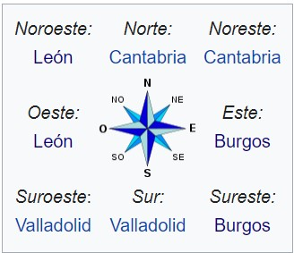
Mapa
Si el mapa superior no funciona haga click aqui
Ir arriba
LOCALIDADES PRINCIPALES
- Palencia ---> 78 629 habitantes
- Aguilar de Campoo ---> 6842 habitantes
- Villamuriel de Cerrato ---> 6503 habitantes
- Venta de Baños ---> 6363 habitantes
- Guardo ---> 6153 habitantes
- Saldaña ---> 3004 habitantes
- Dueñas ---> 2633 habitantes
- Cervera de Pisuerga ---> 2316 habitantes
- Grijota ---> 2269 habitantes
- Carrión de los Condes ---> 2096 habitantes
- Herrera de Pisuerga ---> 2006 habitantes
- Paredes de Nava ---> 1930 habitantes
- Villalobón ---> 1652 habitantes
- Velilla del Río Carrión ---> 1299 habitantes
- Osorno ---> 1225 habitantes
- Baltanás ---> 1216 habitantes
- Barruelo de Santullán ---> 1183 habitantes
- Santibáñez de la Peña ---> 1044 habitantes
- Astudillo ---> 1004 habitantes
- Magaz de Pisuerga ---> 993 habitantes
Ir arriba
GEOGRAFIA
La provincia de Palencia se caracteriza por tener dispares paisajes a lo largo de su territorio. Como bien se canta en su himno, hay «vega y valle, llanura y montaña». La provincia apoya su límite septentrional sobre las altas cumbres de la cordillera Cantábrica. En el ángulo noroeste se alza Peña Prieta con 2533 metros de altitud. A los costados meridional y oriental de esta se prolonga la gran alineación montañosa de Fuentes Carrionas, con otras alturas menores, como las de Espigüete y Valdecebollas, que rebasan los 2000 m., y en el límite provincial llega a 2010m en Peña Labra.
Los mismos plegamientos alpinos produjeron al sur de esa zona montañosa una falla longitudinal en la que el piedemonte serrano deja paso a la planicie meseteña. En esta, sobre la depresión que se formó entonces, se acumularon espesos depósitos finos en régimen lacustre. En la parte superior son de calizas; bajo éstas se hallan las arcillas.
Todos los ríos se benefician de las nieves de aquellas cumbres y aportan su caudal, a través de ese general colector, hacia el Duero, ya fuera de la provincia. El Pisuerga forma valle subsecuente desde Cervera de Pisuerga hasta Aguilar de Campoo. Aguas abajo deriva de él el canal de Castilla que se bifurca en dos tramos, uno que prosigue hasta Valladolid, y otro, el canal de Campos, que lo hace en una localidad de esta otra provincia. Se utilizan ahora para regadío, pero el canal de Castilla se construyó para que sirviera como vía de comunicación y salida hacia el pie de la cordillera Cantábrica de los trigos de Tierra de Campos.
Clima
Según el atlas climático ibérico publicado por la AEMET, a la mayor parte de la provincia se corresponde con los climas Cfb y Csb (templado sin estación seca y templado con estación seca conocidos como oceánico típico y oceánico de transición). En las zonas más elevadas de la parte norte aparecen los climas de montaña Dsc y Dsb.
Tradicionalmente se viene hablando de que en el norte se da un clima oceánico y de montaña y en el sur el mediterráneo continentalizado con influencia oceánica al encontrarse muy influenciado por la altitud (lo que propicia que las temperaturas medias anuales no rebasen los 10 °C y que las precipitaciones sean más abundantes y regulares que en las zonas mediterráneas ordinarias).
La temperatura mínima absoluta ha llegado en alguna ocasión a -14 °C, y la máxima a 39,8 °C. Las máximas se atenúan con la altitud, según se aproxima a la zona más septentrional. Es en esta donde se registra, a favor del relieve, la mayor pluviosidad (se llegan a recoger alrededor de 1000 mm en el extremo norte provincial). A medida que se desciende hacia el sur las precipitaciones van disminuyendo por el páramo hacia la campiña meridional, donde se limita a unos 500 mm al año. En consecuencia, hay una vegetación boreal en las faldas serranas del norte, a base de hayas y robles principalmente, mientras se limita a encinares, choperas y prados cuanto más al sur. La media de días de precipitación al año ronda entre los 150 y los 100 en el tercio norte provincial y entre los 75 a los 100 en el resto.
Si el widget superior no funciona haga click aqui
Ir arriba
HISTORIA
Los orígenes históricos de la ciudad quedan inciertos, pero de lo que sí hay constatación arqueológica es de asentamientos prerromanos en el solar de la ciudad actual, a la que los celtíberos denominaron Pallantia. El pueblo que la ocupó fue el de los vacceos: el más culto de las tribus celtíberas, agrario y con una poderosa organización militar.
El rastro más evidente de romanización que queda en la ciudad es el puente llamado Puentecillas, de origen romano aunque remodelado varias veces. Este puente permitía el acceso a la isla del Sotillo de los Canónigos. Aquí se sitúa el llamado Bolo de la Paciencia, una piedra redonda que fue el mentidero de la ciudad. El puente fue restaurado y remodelado en la Edad Media.
En la Hispania visigoda fue sede episcopal de la Iglesia católica desde el siglo iv, como sufragánea de la archidiócesis de Toledo que comprendía la antigua provincia romana de la Cartaginense. Con los visigodos llegó una de las etapas de mayor esplendor para la ciudad, pues fue una de las sedes de la Corte. Quedan restos del vestigio visigodo en la Cripta de San Antolín y en la cercana localidad de Baños de Cerrato con la iglesia de San Juan de Baños, situada a 7 km de la capital, y considerada la obra cumbre de la arquitectura visigoda.
Se desarrolló como ciudad durante la Reconquista por los reyes asturleoneses. Perdida la diócesis palentina tras la ocupación musulmana, no se restauró hasta que el propio rey Sancho III el Mayor encomendó al obispo de Palencia Poncio su organización. Según la leyenda, el rey se encontró con las ruinas de un templo dedicado a san Antolín mientras cazaba un jabalí y recibió la revelación de restaurar la pequeña iglesia. Descubiertas así las ruinas que abrigaban los restos del mártir, habría sido elegido el lugar como centro de la sede episcopal.
La Edad Media es el período más turbulento de la historia de la ciudad, pero también el de mayor proyección en los acontecimientos en la historia del Reino de León y del Reino de Castilla. Alfonso VIII de Castilla fue el más decidido impulsor de la ciudad, al concederle fueros y el primer concejo libre, y establecer entre 1208 y 1212, a instancias del obispo Tello Téllez de Meneses, una institución educativa que fue la primera Universidad de España denominada Universidad de Palencia o Estudio General de Palencia, recibiendo la aprobación pontificia de Honorio III en 1221 y desapareciendo unas décadas más tarde. La ciudad luchó noblemente en la batalla de Las Navas de Tolosa, en 1212, lo que le supuso la adjudicación de diversos bienes.
Es también de destacar que, en 1388, mientras los palentinos estaban fuera de la ciudad, tropas del Duque de Lancaster llegaron con intención de saquear la ciudad, la cual fue defendida valerosamente por las mujeres palentinas evitando que Lancaster sometiera Palencia. Por ello se premió a la mujer palentina con la banda amarilla de honor, que solo podían llevar los hombres, y que hoy día queda patente en el traje regional.
Es en el siglo xiv cuando la importancia y el volumen que había ido adquiriendo la ciudad obligan a la edificación de una nueva catedral capaz de satisfacer las necesidades de una población pujante. El edificio se construyó sobre las ruinas del anterior de estilo románico, y a su vez sobre las anteriores de la catedral visigoda, quedando de todas ellas vestigios en la edificación actual. Aunque la primera piedra de la nueva catedral se colocó en 1321, las obras no concluyeron en lo esencial hasta finales del siglo xvi. Durante la Baja Edad Media y el Renacimiento se construyeron grandes iglesias y monasterios, como el Convento de san Pablo, el Monasterio de las Claras, el monasterio de san Francisco o la iglesia de la Compañía.
La prosperidad económica del siglo xvi convirtió a Palencia, junto a otras provincias castellanas, en el corazón económico y demográfico del Imperio español. Ya en el siglo xviii, el acontecimiento más beneficioso para la vida de la ciudad fue la construcción del canal de Castilla impulsada por el rey Fernando VI continuada con Carlos III, una de las más representativas obras de ingeniería civil de la época en Europa, comienza en Alar del Rey y cuenta con 38 esclusas en la geografía palentina que riega de norte a sur.
El siglo xx dejó una importante huella en la ciudad. La Primera Guerra Mundial y la guerra civil española favorecieron, hasta cierto punto, el desarrollo económico de la ciudad, cuyas industrias eran imprescindibles para el abastecimiento de los beligerantes. En el siglo xx destacó la actividad creativa de importantes artistas palentinos.
El 19 de julio de 1936 una columna militar salió hacia Venta de Baños y tomó la estación de tren, a continuación toda la ciudad sin que apenas alguien se percatara de ello. La Diputación, el Ayuntamiento y la estación de trenes fueron ocupados con más facilidad. El general Ferrer de Miguel se hizo cargo de la Diputación Provincial y del Gobierno Civil, aunque desde el 19 de julio ambas autoridades habían sido entregadas a un mando militar. Un capitán de artillería fue nombrado alcalde. Muchos fueron los detenidos durante esos días en Palencia, especialmente cuando llegaron armados desde los pueblos de la provincia, respondiendo a la convocatoria del Gobernador Civil. Por su parte, el jefe de la Falange palentina fue liberado y organizó rápidamente una escuadra mixta de falangistas y guardias civiles que recorrió los pueblos de la provincia eliminando todo tipo de resistencia. Gran parte de los represaliados fueron enterrados en la fosa de los alcaldes, en el antiguo cementerio de la ciudad, transformado en 1981 en el parque infantil de La Carcavilla, y donde a partir de 2009 comenzaron las exhumaciones a cargo de la ARMH. Se estima que son 497 las personas enterradas allí.
La remodelación de la ciudad emprendida a fines del siglo xx propició la creación de multitud de espacios verdes, como el parque de la Carcavilla o la Isla dos Aguas, que llevaron a la ciudad a ser la primera en zonas verdes por habitante de España.
Ir arriba
CULTURA
A la Catedral de Palencia se la llama "La Bella Desconocida" apelativo que se generaliza a la capital e incluso a toda la provincia. En los últimos años la actividad ha ido creciendo leve pero constantemente y la extensa oferta turística está resultando acondicionada en infinidad de lugares para los visitantes.
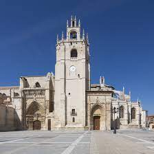Las diferentes muestras de Arte románico. Una de las mejores muestras de este estilo en Europa. Concentra la mayor cantidad de monumentos románicos por superficie de este continente. Destaca entre todas la Iglesia de San Martín de Frómista, considerada como uno de los arquetipos fundamentales del románico español.
Camino de Santiago, a su paso por la provincia, tanto por sus paisajes como por el patrimonio histórico que le rodea. Destacan las localidades de Frómista, Carrión de los Condes y Villalcázar de Sirga. Es Patrimonio de la Humanidad por la Unesco.
Iglesias y museos de la Tierra de Campos. Inmersos en el potente paisaje de Tierra de Campos típicamente castellano.
Villas Romanas: Cuentan con restos romanos muy importantes donde destacan los mosaicos. Las dos Villas principales son "La Olmeda" en Pedrosa de la Vega y "La Tejada" en Quintanilla de la Cueza.
Canal de Castilla, el 80% de su recorrido transcurre por esta provincia. Destacan las esclusas, el puerto fluvial de Alar del Rey, la dársena de Palencia y las rutas en bicicleta siguiendo el canal. Atraviesa importantes localidades como Alar del Rey, Frómista, Grijota o la propia Palencia.
Turismo en la comarca de la Montaña Palentina, destacando sus Parajes naturales enmarcados en el parque natural Montaña Palentina y la Ruta de los Pantanos.
Ir arriba
NATURALEZA
Parque natural Montaña Palentina
El Parque Natural Montaña Palentina es un espacio natural protegido situado en el norte de la provincia de Palencia. En él se encuentran algunas especies endémicas de flora y fauna, así como espacios naturales como bosques de montaña muy bien preservados.
En el extremo norte de la provincia de Palencia se halla esta área montañosa que forma parte de la cordillera Cantábrica y aparece dibujada por las cuencas de los ríos Carrión (Fuentes Carrionas) y Pisuerga (Cueva del Cobre), predominando en la primera las fuertes pendientes con escasa cobertura vegetal mientras que en la segunda son más extensas las masas arboladas, asentadas sobre un relieve menos acentuado.

Espacio natural de Las Tuerces
Las Tuerces es un espacio natural protegido de la provincia de Palencia, configuran un peculiar enclave paisajístico, resultado de los activos procesos de disolución llevados a cabo por la erosión de origen kárstico en las rocas calizas del Cretácico Superior. Situadas en las estribaciones más occidentales de los Páramos de La Lora, en la zona de contacto entre los relieves de la cordillera Cantábrica y los materiales sedimentarios de la Cuenca del Duero, Las Tuerces forman un auténtico laberinto en el que se alternan grandes bloques de formas caprichosas. Esta erosión ha dado lugar al magnífico Cañón de la Horadada, que se puede observar en toda su plenitud desde el Monte Cildá.
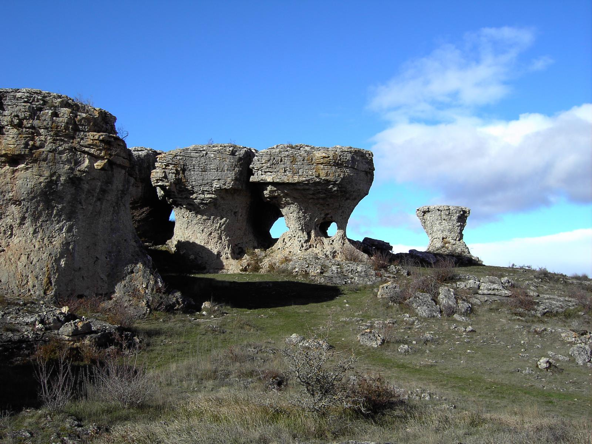Espacio natural de Covalagua
Covalagua es un espacio natural protegido situado en el término municipal de Revilla de Pomar, es una cueva donde nace el Río Ivia, donde el agua circula lentamente sobre la toba que ha ido depositando el río, en forma de peldaños semicirculares, creando pequeñas cascadas entre uno y otro peldaño, hasta la balsa reguladora, rodeado de una reserva de corzos.
Es una zona que constituye un paisaje de típico relieve mesozoico, caracterizado por elevaciones de paredes verticales, coronadas por una meseta más o menos llana, aisladas en una vasta región donde predomina la horizontalidad.
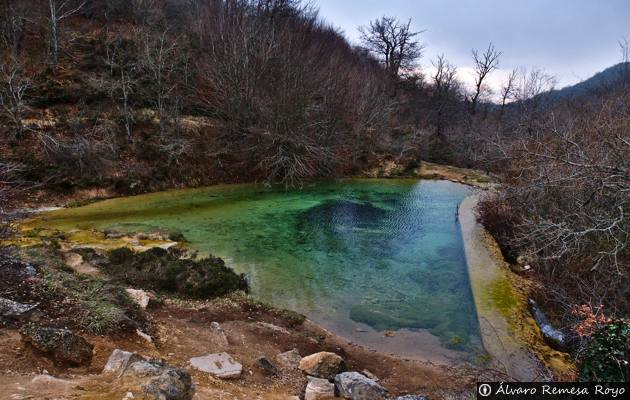Ir arriba
TRADICIONES
1 de Enero: Bautizo del Niño. Tras una ceremonia religiosa, la cofradía, que tiene su sede en San Miguel, lleva en procesión al niño alrededor de la iglesia bailándolo al ritmo de un villancico medieval que relata desde las profecías hasta los acontecimientos que rodearon al nacimiento de Jesús. Siguiendo la tradición de los bautizos, la madrina tira desde un balcón caramelos y monedas a los asistentes.
17 de Enero: San Antón. También en la iglesia de San Miguel se presentan semillas y animales para que sean bendecidos. El acto se ameniza con coplas sobre la vida y milagros del santo.
16 de Abril: Santo Toribio. Desde la ermita del Cristo del Otero, la corporación municipal recuerda la lapidación de que fue objeto el santo, pero invirtiendo la situación; son los palentinos los apedreados con pan y quesillo. La romería continúa con una fiesta a los pies del cerro. Si la fecha coincide en Domingo, se celebra el domingo siguiente.
Pentecostés. Feria Chica. Cantos y bailes tradicionales de los grupos folclóricos de la provincia acompañan unas fiestas populares que datan del siglo XII.
Corpus Christi. De la Catedral sale una procesión que recorrerá la ciudad bajo una lluvia de pétalos de rosas. Niños y danzantes acompañan a la Custodia de plata conocida como Carro Triunfante.
La matanza es una costumbre popular existente en diversos países europeos, generalizada desde tiempos remotos y realizada de forma artesanal, con diversas peculiaridades en función del lugar en que se celebra.
Se efectuaba una vez al año, generalmente coincidiendo con los meses más fríos del invierno a fin de conservar por más tiempo las carnes de la matanza. Era una forma de subsistir en los pueblos, se mataba el cerdo para elaborar los riquísimos embutidos, carnes, jamones y otras partes del porcino que se consumirían a lo largo del año.
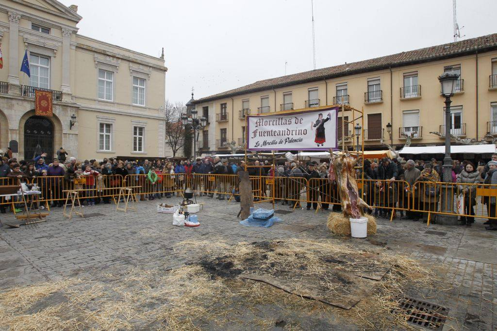La conmemoración de Santa Águeda el 5 de febrero es una fiesta muy popular en muchos lugares de Castilla.
Patrona de la enfermedad de la mujer, sobre todo las de los pechos, en honor a la joven virgen cruelmente torturada por Quinciano, que llegó a ordenar que se le cortaran los pechos. La tradición nos ha legado la respuesta de Santa Águeda: “cruel tirano, ¿no te da vergüenza torturar en una mujer el mismo seno con el que de niño alimentaste?”
Se está creando una tradición, que no existía en varias localidades de la provincia con motivo de la festividad de Santa Águeda y organizado generalmente por Asociaciones de Amas de Casa para reivindicar el papel de la mujer con el objetivo de que se consolide con el tiempo y se convierta en una jornada en la que las vecinas se unen para compartir sus experiencias y pasar unas horas de ocio, lejos de las tareas cotidianas.
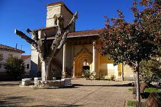La olla ferroviaria es un invento de los antiguos maquinistas, fogoneros y guardafrenos del Ferrocarril Hullero que hacía el trayecto entre La Robla y Balmaseda, más conocido como el Ferrocarril de La Robla, que idearon un sistema para cocinar utilizando el calor del motor de la locomotora. En el punto intermedio de este recorrido se halla la estación cántabra de Mataporquera, donde reposaban las máquinas de carbón y agua y donde se encontraban los únicos trenes de viajeros y mercancías, que trasportaban carbón y apeas. Era, por lo tanto, una población muy conocida en el entorno ferroviario.
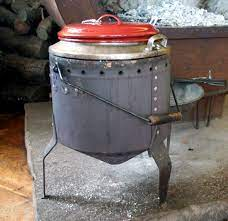Ir arriba
OTROS ASPECTOS DE INTERES
Gastronomia
La cocina palentina reúne los saberes culinarios y las tradiciones de la cocina castellana. Tierra donde la preparación básica es el asado (horno de leña) de las abundantes carnes que ofrece la tradicional ganadería ovina que recorre sus paisajes. Principalmente de su lechazo churro. Es una cocina labradora y pastoril de preparaciones sencillas, que emplean los ingredientes que se cultivan naturalmente en la provincia. Caso de las humildes sopas de rastrojo y las castellanas y el cocido castellano.
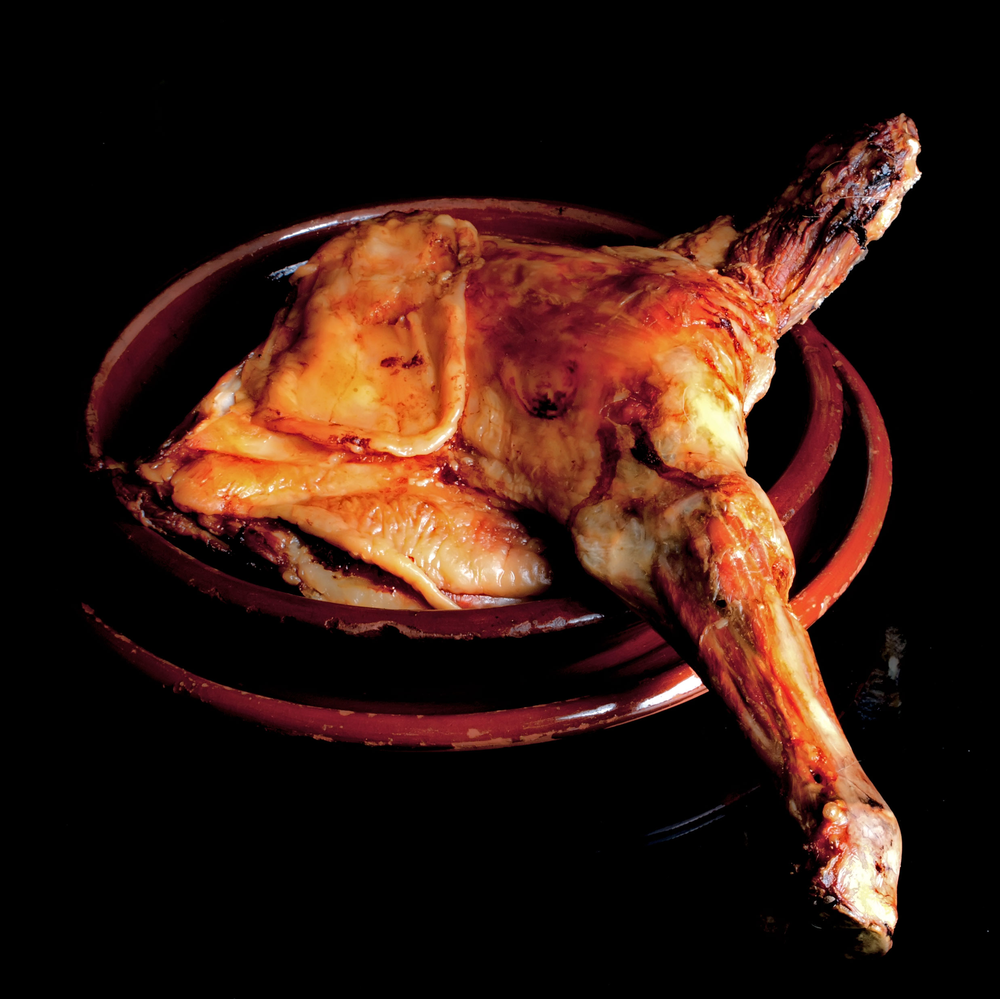 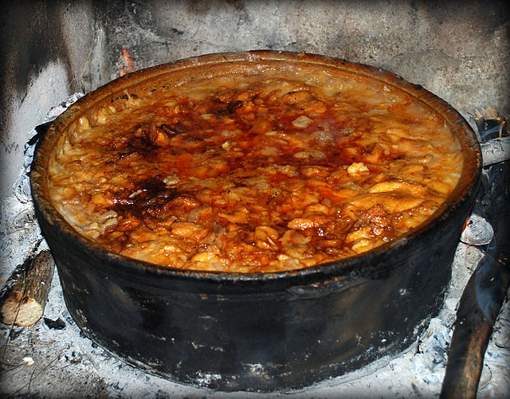Fauna
Entre los grandes mamíferos destacan el ciervo, el jabalí, el zorro y el lobo, tradicional visitante de los páramos de La Lora, como lo demuestran las antiguas trampas para estos cánidos existentes en estos parajes.
Especies de tendencias rupícolas como el águila real, otros mamíferos de menor tamaño que viven en su entorno son el gato montés, la marta, la garduña, la comadreja, la gineta, el conejo y la liebre.
Las áreas forestales son el refugio de aves como el cárabo, el arrendajo, el carbonero común, el águila calzada, el búho chico, el águila culebrera, el gavilán, el ratonero común, el cernícalo vulgar, buitre leonado, el búho real, el alimoche, el vencejo real, la chova piquirroja, el halcón peregrino y el cuervo.
En los eriales y zonas de cultivo situadas en las partes bajas de este espacio nidifican los aguiluchos cenizo y pálido, dos especies con una morfología perfectamente adaptada para la vida de estos medios.
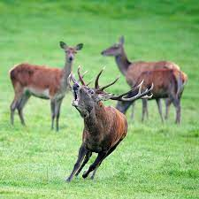 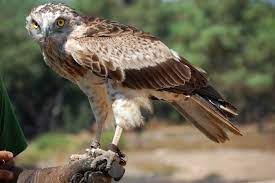Sonido de la berrea del ciervo
Flora
Se mezclan especies arbóreas de carácter atlántico y mediterráneo. En las zonas de umbría con microclima fresco y húmero predominan las hayas acompañadas por quejigos. En las laderas de solana, es el quejigo la especie más común.
Numerosas son las especies que crecen al amparo de estos bosques. Tejos, acebos, rosales silvestres, encinas, majuelos, endrinos, robles melojos y avellanos, tienen una presencia puntual entre el hayedo-quejigar.
Pequeñas plantas como la aguileña, el torvisco macho y el poligonato, surgen entre el bosque y junto a los arroyos.
Tapizando el suelo aparecen, ampliamente distribuidos, matorrales de pinchuda aulaga, brezos y gayuba.
En las zonas del entorno de Covalagua se localizan pequeños rodales de pinares de repoblación, constituidos por el pino silvestre, el pino insigne y el pino laricio.
Formaciones de tomillar-pradera, brezos y raros ejemplares de pino sobreviven a duras penas al frío y a los fuertes vientos de las altillanuras del Páramo como únicos testigos de vegetación.
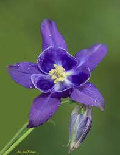 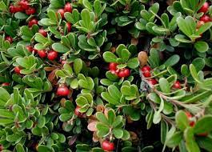